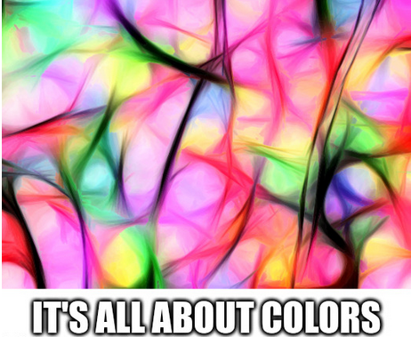

Image-to-image translation is a computer vision task aiming to learn the mapping between an input image from one domain to an output image from another domain following the style or characteristics. It can be applied to a wide range of applications, such as collection style transfer, object transfiguration, season transfer, and photo enhancement. Hue-Net is a deep learning framework for intensity-based Image-to-Image translation. It introduces a differentiable representation of (1D) cyclic and (2D) joint histograms and uses them for defining loss functions based on cyclic Earth Mover's Distance (EMD) and Mutual Information (MI). The of Hue-Net strength has been demonstrated on color transfer problems, where the aim is to paint a source image with the colors of a different target image.
